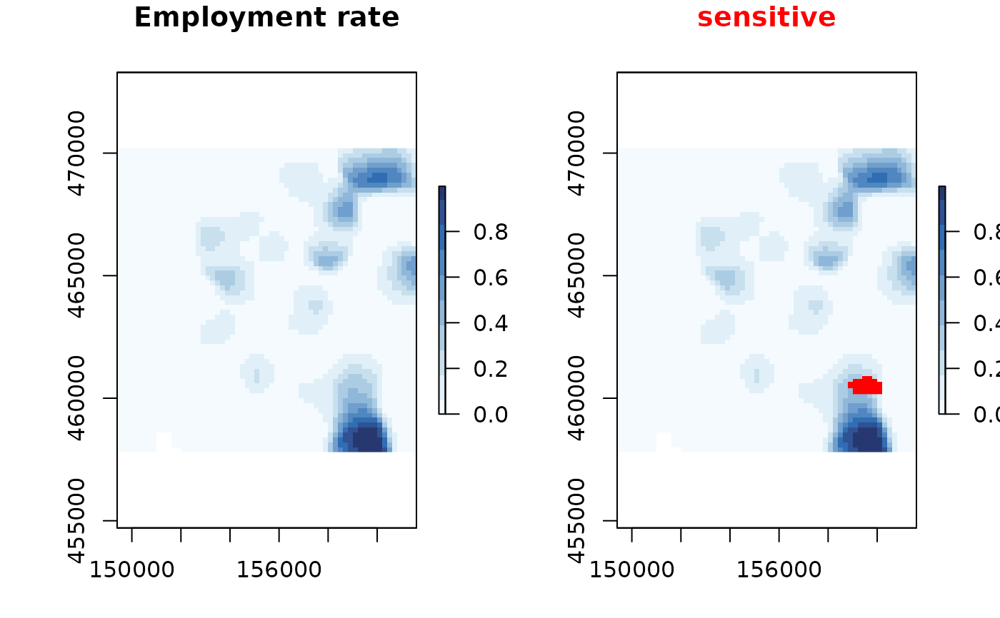

The data are generated with residence/household locations from the Dutch open data BAG register. The locations are realistic, but the associated data is simulated.
dwellings
Format
An object of class data.frame with 90603 rows and 4 columns.
Details
x,integer, x coordinate of dwelling (crs 28992)y,integer, y coordinate of dwelling (crs 28992)consumption,numeric, simulated continuous valueunemployed,logical, simulated discrete value
References
Basisregistratie Adressen en Gebouwen https://zakelijk.kadaster.nl/bag-producten
Examples
# dwellings is a data.frame, the best way is to first turn it # into a sf or sp object. # create an sf object from our data if (requireNamespace("sf")){ dwellings_sf <- sf::st_as_sf(dwellings, coords=c("x", "y"), crs=28992) unemployed <- sdc_raster( dwellings_sf , "unemployed" , r=200 , max_risk = 0.9 ) plot(unemployed) sensitivity_score(unemployed) unemployed_smoothed <- protect_smooth(unemployed, bw = 0.4e3) plot(unemployed_smoothed, main="Employment rate") plot(unemployed_smoothed, "sum", main = "Employment") } else { message("Package 'sf' was not installed.") }#>dwellings_sp <- dwellings # or change a data.frame into a sp object sp::coordinates(dwellings_sp) <- ~ x + y tryCatch( # not working on some OS versions. sp::proj4string(dwellings_sp) <- "+init=epsg:28992" ) consumption <- sdc_raster(dwellings_sp, dwellings_sp$consumption, r = 500) consumption#> numeric sdc_raster object: #> resolution: 500 500 , max_risk: 0.95 , min_count: 10 #> mean sensitivity score [0,1]: 0.4207188plot(consumption)# but we can also create a raster directly from a data.frame unemployed <- sdc_raster( dwellings[c("x","y")], dwellings$unemployed)